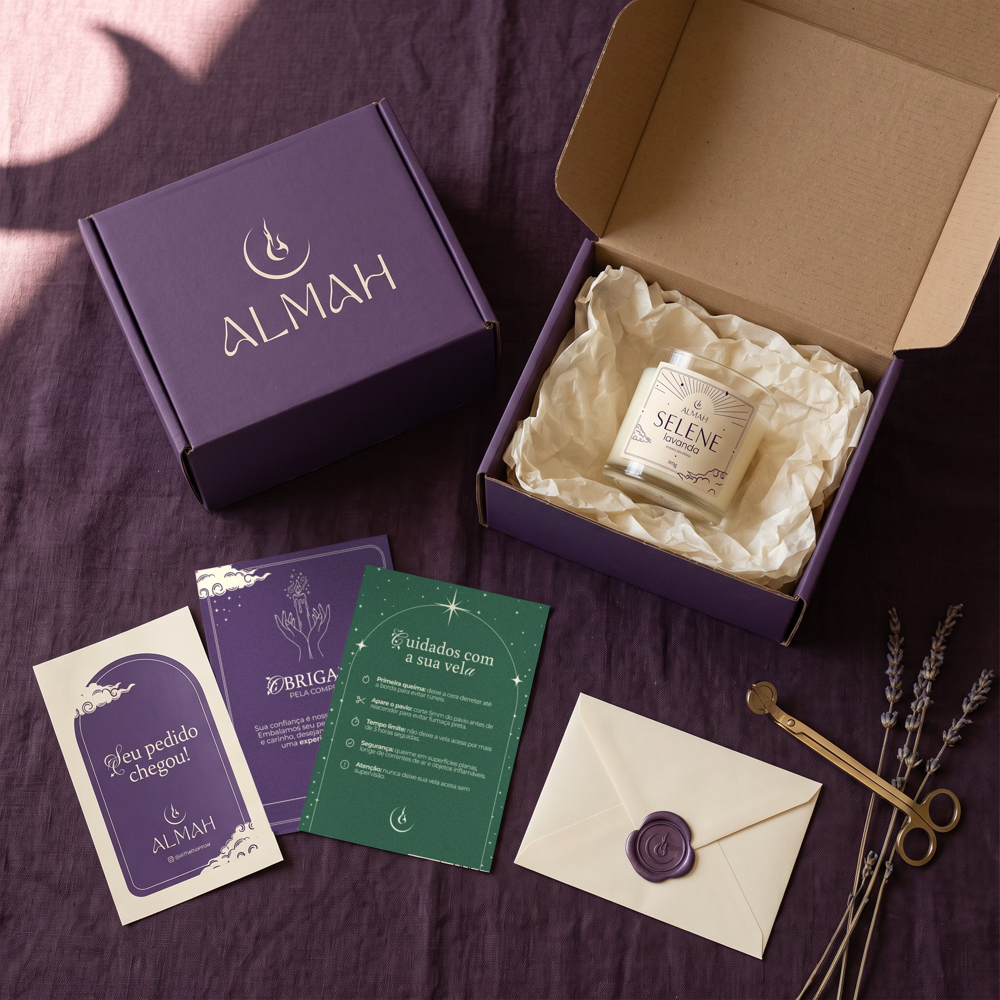

Almah · Coleção Gênesis
Cinco velas, cinco céus
 AURAbaunilha
AURAbaunilha TERRAcascas e folhas
TERRAcascas e folhas SELENElavanda
SELENElavanda SERENArosas
SERENArosas VÊNUScereja e avelã
VÊNUScereja e avelãFeitas à mão, uma tinta só sobre papel creme.
@almahdomus
Almah · Coleção Gênesis
AURAbaunilhaTERRAcascas e folhasSELENElavandaSERENArosasVÊNUScereja e avelãFeitas à mão, uma tinta só sobre papel creme.

Caixa roxo-profundo, laço de barbante e o adesivo da marca. Uma vela feita à mão, do jeito que ela merece chegar.
Seu pedido chegou



Papel de seda, a vela, o card de agradecimento e o lacre em cera com o símbolo.
O símbolo
Uma luz que nasce dentro da lua.